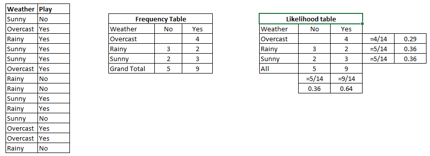
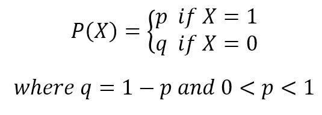
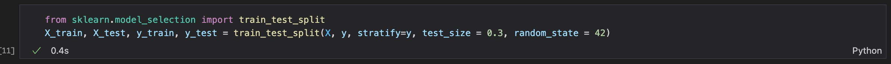
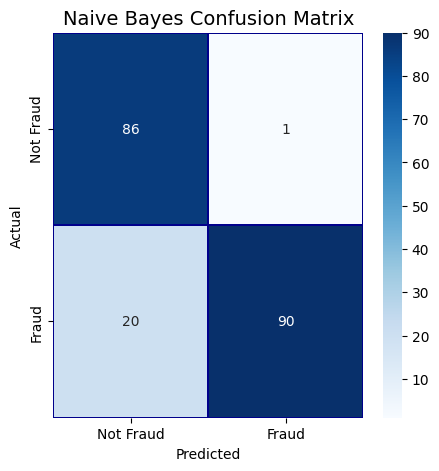
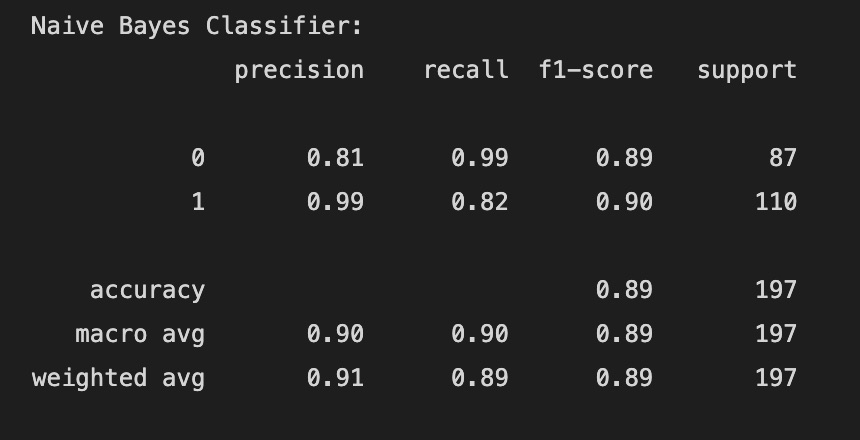
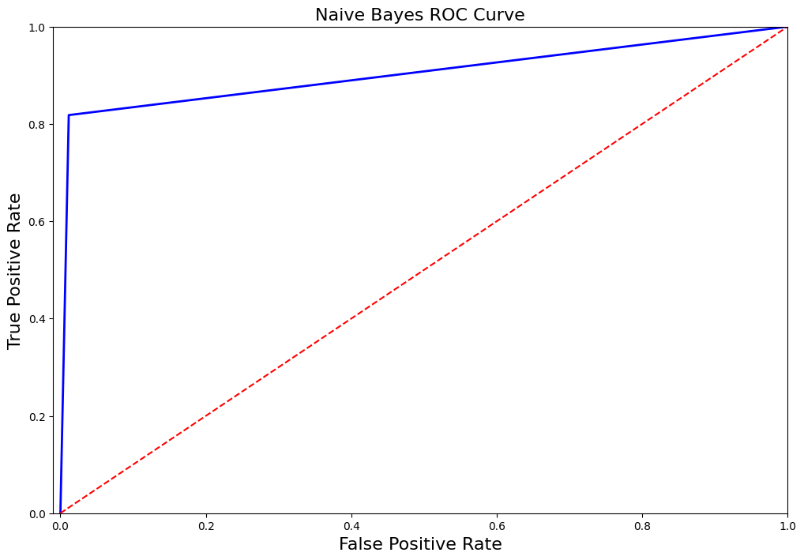

Naive Bayes

Multinomial Naive Bayes
Multinomial Naive Bayes (MNB) is a probabilistic algorithm used for text classification.
It is one of the simplest and most effective algorithms for this task. The algorithm is based on Bayes' theorem,
which describes the probability of an event, based on prior knowledge of conditions that might be related to the event.
The MNB algorithm is trained using a set of labeled documents. Each document in the set is represented by a vector of word counts, where the count for
each word represents the number of times that word appears in the document. The training process involves estimating the probabilities of each word
occurring in each class (i.e., category or label). This is done by counting the number of times each word appears in each class and normalizing by the
total number of words in that class. This gives us the probability of each word occurring in each class, which is used to calculate the probability of a
document belonging to a particular class.
To make a prediction for a new document, the MNB algorithm calculates the probability of the document belonging to each class based on the word probabilities
estimated during training. It then chooses the class with the highest probability as the predicted class for the document.
One of the key assumptions of the MNB algorithm is the independence of the features (i.e., words) given the class. This means that the occurrence of one word
in a document does not affect the probability of another word occurring in that same document.


Smoothing in Naive Bayes
With a set of input features, Naive Bayes determines the likelihood of a class given in the input.
In certain circumstances, a feature may not be present in the training data for a specific class, leading
to a probability of zero. This can be problematic when attempting to make predictions because the sum of the
probabilities for all features will equal zero, giving that class an overall probability of zero.
Smoothing is used to address this problem by adjusting the probability estimates for features that have
zero counts in the training data. The idea is to add a small constant value (often called the smoothing
parameter or Laplace smoothing parameter) to the count of each feature, which has the effect of shifting
the probability estimates away from zero. This helps to avoid overfitting and makes the model more robust
to unseen data.
Bernoulli Naive Bayes
The primary characteristic of Bernoulli Naive Bayes is that only binary values—such as true or false, yes or no, success or failure, 0 or 1—are accepted for features. So, we prefer to use the Bernoulli Naive Bayes classifier when the feature values are binary. In Bernoulli Naive Bayes, each input feature is assumed to have a binary probability distribution, where the probability of the feature being present is represented by a parameter called the feature probability. The model calculates the probability of each class given the input features using Bayes' theorem, which states that the probability of a a class label given the input features is proportional to the probability of the evidence given the class label, multiplied by the prior probability of class labels.

Code Explanation
The basic idea is to partition the dataset into two subsets: one for training the model and another for testing its accuracy,
which is done using one of the libraries provided "from sklearn.model_selection import train_test_split".
The training set
is used to fit the model parameters, while the test set is used to evaluate the performance of the trained model on new,
unseen data. In our case due to the imbalanced dataset(where it had just 492 fraudulent cases) we will use sampling method in this case
downsampling to make the majority and minority class label have same proportion. Here the split is done using a paramater stratify
which basically returns train and test with same proportions of class labels
as the input dataset. Moreover the train and test is split in 70%-30% as describe in the parameter test_size
Where random_state defines the random sampling of the train and test datasets and produces same results every time it is run.

Cleaned Data

Training & Testing Data


Our problem statement is to train our model to identify the fraudulent transactions on the unseen data, a classification algorithm will identify and classify the transactions as fraudulent or non-fraudulent. Let's see this using a Naive Bayes Classifier. After fitting the Naive Bayes model against our training data shown above, the ext step is to make prediction on unseen data which is testing data.
Confusion Matrix
From the confusion matrix above, we get the idea of our True Positive Rate and True Negative Rate, Accuracy, Senstivity, Specificity. To check if our model is performing well, there is cost associated to whether having a false negative case or false positive case is costly for us. Which means predicting a fraud case as non-fraudulent (i.e false negative) or non-fraud as fraud (i.e false positive) is beneficial for us, In this case we will want to decrease the false negative cases which in turn is costly for us when detecting on unseen data, as we will incur a financial loss due to the cases which were not detected as fraudulent. The most common metrics to use for imbalanced dataset are:
- F1 score
- Precision
- Recall
- AUC score (AUC ROC)
- Average precision score (AP)
Let's have a look at our performance metrics.


Conclusion
From the performance metrics we can conclude that naive bayes did a great job in indentifying most of the fraudulent transactions 90 out of 110, although we can also test upsampling or feature importance to increase our recall score such that model is more accurate in predicting fraudlent transactions. Our Naive Bayes model gave an accuracy of 89%. In case of fraudulent transactions recall is better favoured than precision because there is no harm in alerting a non-fraud transaction as fraud, but there will be more loss if a fraud transactions is labelled as non-fraud.